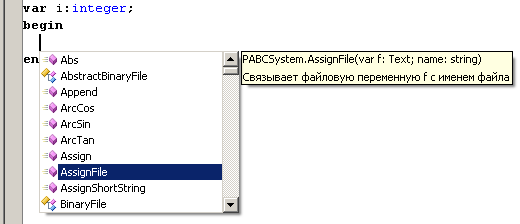
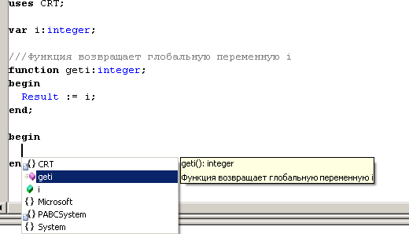
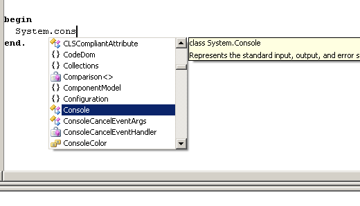
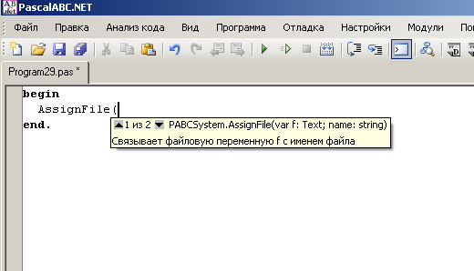
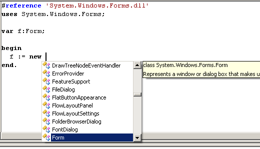

1. Подсказка по Ctrl+пробел выводит список всех доступных имен.

2. Подсказка по Shift+пробел выводит список всех доступных имен из текущего модуля. Также добавился комментарий /// который позволяет связать подсказку с элементом программы (процедура, функция, переменная)

3. Подсказка по "точке". Если после имени была нажата точка, то выдается список его членов.

4. Подсказка параметров функций
5. Нажатие пробела после операции new приводит к появлению подсказки, состоящей только из имен типов только с типами. Если из контекста понятен тип выражения, то курсор позиционируется сразу на нужный тип.

6. Пункты меню "Найти все ссылки", "Перейти к определению", "Перейти к реализации".